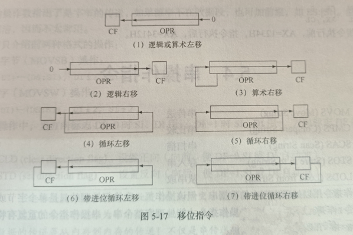

面向机器的用符号表示的程序设计语言,也有符号语言. 汇编语言由:汇编指令(机器码的助记符),伪指令和其他符号
B(二进制)D(十进制) 转换:除法取余并倒过来 原码--就是本身 反码--负数取反,正数不变(符号位不变) 补码--负数在反码基础上加一,正数不变
采用的是美国信息交换标准代码 ASCII
注意十六进制要在后面加 H 以区别
十六进制和二进制就是每四位组成
对"数的补码"求补就是该数取反的补码,即 [[x]补]补 = [-x]补
and ^ *
or |
xor
not
中央处理器(运算器和控制器),存储器,输入输出,用系统总线(数据总线,地址总线,控制总线)连接起来
16位CPU的特点
数据总线16位
最多可以处理16位的数据
寄存器最大宽度16位
寄存器与运算器的通路为16位
基本存储单元
八位二进制组成一个字节
byte,两个字组成一个字word,两个字为双字dword8086的存储器以字节为基本存储单位,对内存的读写至少是一个字节 字的结构如下:0 1 1 1 0 0 1 0 | 1 1 1 0 0 0 1 0 高 位 字 节 | 低 位 字 节
规定:低字节存放于低地址单元,高字节存放于高地址单元
如何用16位结构实现20位的物理地址的传送和内存寻址: 8086 CPU在内部使用两个16位地址合成来形成一个20位物理地址的方法.
采用" 段地址*16 + 偏移地址 = 物理地址",用于采用十六进制来表示,即相当于把段地址左移一位加上偏移地址就是物理地址
每个段的大小为64 KB 即偏移地址 从0000 ~ FFFF
段的类型
代码段:存放指令,代码段段基址存放在段寄存器CS,64 KB
数据段:存放数据,数据段段基址存放在段寄存器DS,16 KB
附加段:辅助存放,附加段段基址存放在段寄存器ES,2 KB
堆栈段:堆栈,存放在段寄存器SS
通用数据寄存器
AX:累加器,运算时多使用
BX:基址寄存器,经常用于存放起始偏移地址,如[BX]
CX:计数寄存器,经常用于循环 loop 的次数计算
DX:数据寄存器,有时用于存放32位数据的高十六位
每一个寄存器又分为*H和*L,分别存放8位
地址寄存器
SP:堆栈指针,存放栈顶的偏移地址,一般与SS配合使用
存入堆栈每次减二,以字存入,先减后存
BP:基址指针,存放数据的偏移地址,与BX配合使用
SI:源变址寄存器,即某个操作的源操作地址
DI:目的变址寄存器,即某个地址的目的操作地址
SI和DI在某些汇编指令下可以自动递增或递减
段寄存器
CS:代码段寄存器
SS:堆栈段寄存器
DS:数据段寄存器
ES:附加段寄存器
与前面的存储器分段相映照
指令指针寄存器
IP:用于存放当前指令的地址
从 CS : IP 指向的内存单元读取指令,进入指令缓冲器
IP 加上指令长度,即下一条指令地址
标志寄存器
FLAGS:存放两类标志
状态标志
CF:进位(carry)
PF:奇偶(positive)
AF:辅助(assistant)
ZF:零(zero)
SF:符号(sign)
OF:溢出(overflow)
控制标志
TF
IF:中断(int...)
DF:方向(direct)
有三种模式:实模式,保护模式,虚拟8086模式
16位和MS DOS只在实模式运行,20位的物理地址为16位段地址加16位偏移地址
32位使用保护模式,访问内存使用逻辑地址,逻辑地址由16位段选择符(由系统决定)和32位偏移地址(使每段的长度为4GB)得到,支持多任务
如win系统中新开一个DOS应用程序就是虚拟8086模式
R
查看寄存器内容
使用
r ax可以用来编辑具体寄存器的值,直接回车则不进行更改
E
更改内存内容
使用
e 1000:0来更改内存中 1000段地址加上0偏移地址的内容空格跳过当前单元内容,回车结束
A
向内存写入汇编命令
使用
a 1000:0在1000:0 处写入命令在debug中如要 更换 段寄存器 则需要在使用前单独 输入
ds来改变,不能 直接ds:[100]来使用
D
查看内存内容
使用
d 1000:0来查看内存中的地址在debug命令中,界面左边为逻辑地址,中间为内存单元的内容(十六进制),右侧为内存对应的ASCII 字符(没有则以
.显示)
U
进行反汇编
界面左边为逻辑地址,中间为十六进制的机器码,左边为具体的汇编指令
G
可以用执行跳到某个地址的汇编命令处
使用
g=起始地址 终止地址,其中终止地址为设置断点,让程序停在某个位置,便于观察和调试
P
用以执行循环或重复的字符串指令,程序中断或子例程
如执行到
int 21h,p可以一次执行完系统例行程序,并回到用户程序中
T
单步执行
使用
t=起始地址 指令条数
Q
退出debug
编辑程序 edit.com(可以使用其他文本编辑器)
汇编程序 masm.exe
链接程序 link.exe
调试程序 debug.exe
对于现在的学习汇编需要使用DOSBox的环境模拟器,官网点这里 其他的配置网上有
和windows的powershell差不多
编辑源文件
使用 masm 源文件名 汇编产生OBJ二进制目标文件
使用 link obj文件名 链接产生EXE可执行文件
使用 exe文件名 直接运行即可
其他选项可以直接
enter回车直接默认或者在上述使用
masm和link的结㞑加上;来直接保持默认
还可以使用 masm hello hello hello 来得到一个列表文件,其中包含一些汇编过程的参考信息
| ah寄存器 | 功能 | 入口参数 | 出口参数 |
|---|---|---|---|
| 01 | 输入并回显 | 无 | al(输入的字符) |
| 02 | 显示输出字符 | dl(输出的字符) | 无 |
| 07 | 键盘输入 | 无 | al(输入的字符) |
| 09 | 显示字符串 | DS:DX(串的地址),且串以 $ 结束 | 无 |
| 0A | 键盘输入到缓冲区(数据结构定义见下面) | DS:DX(缓冲区首地址),且存放的是缓冲区的字节数 | DS:DX+1 存放的是实际字节数 DS:DX+2 存放的是输入的串地址 |
| 4C | 程序结束 | al(返回码) | 无 |
xxxxxxxxxxdata segment buf db 9 ;定义的缓冲区大小 real db ? ;程序运行后改的,? 表示不确定内容,实际输入的字符个数 str db 9 dup(?) ;输入的字符实际存放的地方,包含回车键 其中 9 dup(?) 表示 9个?字节区域data ends
寻址方式即指令中寻找操作数的方式
偏移地址称为有效地址,简称 EA
立即寻址
它本身即是操作数
只能用于源操作数字段,且类型必须和目的操作数一致,目的操作数是字节,则立即数也必须是字节
寄存器寻址
操作数存放在寄存器中
16位操作数可以是AX,BX,CX,DX,SI,DI,SP,BP 而8位是除去SI,DI,SP,BP的*H和*L寄存器
直接寻址
EA直接写在指令中
如
mov ax,ds:[100H]中的ds:[100H]就是直接寻址,必须使用前缀 ds 指出在数据段中,物理地址按照之前的转换方式来转换还可以用符号地址 如使用
db dw等伪指令定义的符号,默认为数据段 ds若使用 equ 伪指令定义则需要加上前缀 ds:
xxxxxxxxxxvalue dw 5678hmov ax,value ; 与下面等价mov ax,[value]结果为: ax的内容为 5678H
寄存器间接寻址
EA存在寄存器中
xxxxxxxxxxmov ax,[bx]只允许 bx,bp,si,di,其中BX,SI,DI默认DS寄存器而BP默认SS寄存器
寄存器相对寻址
EA 是寄存器和偏移量之和
允许的寄存器和默认段寄存器和寄存器间接寻址一样
可以通过以下方式访问:
mov ax,array[bx]
mov ax,[array][bx]
mov ax,[array+bx]
mov ax,[bx].2623H
基址变址寻址
EA 是基址寄存器和一个变址寄存器之和
默认段寄存器和寄存器间接寻址一样
允许的基址寄存器是BX和BP,变址寄存器是SI和DI
相对基址变址寻址
EA 是一个基址寄存器和一个变址寄存器和一个位移量之和
默认段寄存器和寄存器间接寻址一样
允许的基址寄存器是BX和BP,变址寄存器是SI和DI
双操作数指令中规定不能两个操作数同为内存单元
汇编语言的一般格式如下:
[标号:] 指令助记符 [操作数] [;注释]
start: mov ax,data ;将data送入ax
标号:符号地址,表示指令在内存中的位置,冒号不可省略
指令助记符:指令的英文缩写
操作数:操作的数据或数据所在的地址
对于双操作数:左边的操作数参与指令操作,存放操作结果,也称目的操作数DST ;右边的操作数仅参与指令操作,在运行后内容不变,也称源操作数SRC
注释:以 ; 开始,对指令的功能加以说明
mov
格式:
mov dst,src双操作数规定:
源操作数和目的操作数长度必须一致,如 不能将 258 送入 ah寄存器(8位)
不能同为存储器
目的操作数不能为cs或ip
目的操作数不能是立即数
以下为错误示例说明:
mov [bx],0是错误的,因为以低地址访问主存单元时,[bx]不能确定是字节单元还是字单元,长度不确定.
mov byte ptr [bx],0
mov word ptr [bx],0都是可以的
段地址寄存器必须通过寄存器得到段地址,不能直接用符号地址,段寄存器,立即数得到
mov ax,data
mov ds,ax不管变量的类型如何,其有效地址总是16位的
push
格式:
push src操作:
sp <- sp-2
sp+1, sp <- src
以字为单位进行操作
pop
格式:
pop dst操作:
dst <- sp+1,sp
sp <- sp+2
下面这个操作也是允许的
xxxxxxxxxxpush [2016]; 其他操作pop [2016]
xchg
格式:
xchg opr1,opr2用以两个操作数互换位置,两个操作室都视为 目的操作数
输入输出端口是CPU与外设传送数据的接口,不属于内存
端口地址为0000 ~ FFFF
指令只限于AX,AL(累加器)
in
把端口号或dx指向的端口的数据输入到累加器
长格式:00~FFh,占两个字节
in al,port
in ax,port短格式:端口号保存在DX寄存器中,当端口号为 0100H ~ 0FFFFH 时,必须使用短格式,占一个字节
in al,dx
in ax,dx
out
把累加器的数据输出到端口或dx指向的端口中
长格式:00~FFh,占两个字节
out port,al
out port,ax短格式:占一个字节
out dx,al
out dx,ax
xlat
操作:
al <- bx+al
就是将存在 bx+al 地址的值传给 al
lea
格式:
lea reg,src把源操作数的有效地址 EA 送入寄存器
使用
mov reg,offset src也可
lds
格式:
lds reg,src操作:
reg <- src
ds <- src+2
把源操作数指向的内存单元两个字分别送到reg和ds
les
格式:
les reg,src操作与lds 类似
把源操作数指向的内存单元两个字分别送到reg和es
lahf:送入ah
sahf:从ah送入标志寄存器
pushf:标志入栈
popf:标志出栈
cbw: convert byte to word
cwd:convert word to double word
操作数默认为累加器
扩展为符号扩展
如 al 最高位为 1 ,则 ah 为 FFH, dx 为 FFFFH
如 al 最高位为 0 ,则 ah 为 00H, dx为 0000H
若 al ,则扩展到 ax
若 ax ,则扩展到 dx,ax
add:加法
格式:
adc dst,src操作:
dst <- src + dst
adc:带进位加法
格式:
adc dst,src操作:
dst <- src + dst + cf
其中 cf 为 运算前 cf 的值
inc:加1
格式:
inc opr操作:
opr <- opr+1
不影响 CF 标志位
无符号数是否溢出需要看CF标志位
有符号数是否溢出需要看OF标志位
如果参与运算的有符号数一正一负,一定不会发生溢出
sub
sbb
dec 以上皆和加法指令类似
neg
求补(即求相反数)
cmp
格式:
cmp opr1,opr2操作:
opr1 - opr2
若opr1 ＜ opr,则SF为1(表示相减结果为负),CF为1(表示被减数不够减,需要借位,CF置1)
如果参与运算的同符号则一定不会发生溢出
只有在求补的数为零CF才等于0,其他情况CF为1
mul
mul src操作:
ax <- al * src
dx,ax <- ax * src
imul
与上面类似
src可以是寄存器或变量,但不能是立即数,因为立即数长度不确定
长度默认是乘数的两倍,所以不会出现溢出的情况
div
div src操作:
al <- ax \ src
ax <- dx,ax \ src
idiv
和上面类似
由操作可知,一帮需要用符号扩展指令使得被除数比除数长一倍
若除数是字节类型,则商为8位,若被除数的高8位≥除数的绝对值,会发生溢出
若除数是字类型,则商为16位,若被除数的高16位≥除数的绝对值,会发生溢出
出现溢出,系统转0号类型中断处理,提示"divide overflow"
简单理解就是把十六进制转换成十进制表示
DAA:加法的十进制调整指令,将al中的值转为正确的bcd码格式
如果 al 的低四位 > 9,或者 af =1,则 al = al +6
如果 al 的高四位 > 9,或者 cf = 1,则 al = al + 60h,且cf = 1
上面操作可以叠加,即如果 af = 1且 cf = 1 ,则 al = al + 66h,qie cf = 1
DAS:减法的十进制调整指令
与上面类似,把加换成减即可
就是 al,bl存放的十六进制的数18,65,把它们当做十进制来看,就是18和65,而不是24和101 然后相加为8d(十六进制)转换为93
and
or
not
不影响任何标志位
xor
test
两个操作数相与,不保存结构,只根据结果改变标志位
shl:逻辑左移
sal:算数左移
shr:逻辑右移
sar:算数右移
rol:循环左移
ror:循环右移
rcl:进位左移
rcr:进位右移
格式:
shl opr,1
shl opr,cl如移位的次数大于1则需要把移位的次数送入 cl 中
移位指令的相关操作图示如下:

前缀指令:对于数据串来说,需要重复执行串操作指令才能处理完整个数据串
例如
rep movsb都需要设置cx,若cx为0,则"跳出"循环
rep(重复)
repe/repz(相等/为零重复),zf = 1 继续执行
repne/repnz(不相等/不为零重复),zf = 0 继续执行
方向设置有两条指令
cld(clear direction flag):设置正向,df = 0 SI 或 DI 自动加
std(set direction flag):设置反向,df = 1 SI 或 DI 自动减
movs:按 df 标志自动加减
movsb:字节,加减1
movsw:字,加减2
movs dst,src
目的地址为 ES : [DI] 源地址为 DS:[SI]
前面两种格式不需要操作数(默认)
movs es:byte ptr[di],ds:[si]以字节为单位传送
cmps:两串的比较
cmpsb
cmpsw
cmps dst,src
和movs的地址设置一样
不保存结果,只根据结果设置标志位
scas:把al/ax的内容与附加段和目的变址寄存器指向的内容进行比较,一个字符和一串比较
scasb
scasw
scas dst
只涉及一个目标串,因此为 ES:[DI],源操作数为 al 或者 ax
stos:把al/ax的内容存入附加段和目的变址寄存器指向的内存单元中
stosb
stosw
stos dst
目的操作数与scas一样
可以用于初始化某一块内存区
lods:将DS和SI指定的单元内容存入累加器中,一般没用
lodsb
lodsw
lods src
src由 DS:[SI] 指定
无条件转移
转移的目标地址在跳转指令中直接给出,叫做直接转移,否则叫做间接转移
段内直接转移
格式:
jmp near ptr opr操作: ip <- ip + opr
opr是有符号数,如果opr是负数则会程序回退
如果在 -128 ~ 127 ,还可以写成
jmp short opr,通常opr 的属性说明可以省略jmp机器指令中不是直接给出目标偏移地址,而是给出相对于目标位置的位移量(相对)
段内间接转移
格式:
jmp word ptr opr操作: ip <- EA
EA 由 opr 的寻址方式确定,可以使用除立即数的任何一种方式(因为这个是直接转移)
段间直接转移(跨段直接远转移)
格式:
jmp far ptr opr操作:
ip <- opr的偏移地址
cs <- opr的段地址
段间间接转移
格式:
jmp dword ptr opr操作:
ip <- EA
cs <- EA + 2
可以使用除立即数 寄存器(因为是dword,而寄存器只有word)以外的任何寻址方式
以下不做详细说明, z 可以看做zero, e可以看做 equal, s可以看做 signed(负数), c可以看做 carry, l可以看做less(小), b可以看做 below, o可以看做 overflow ... 根据语义理解跳转条件
单个条件标志如:jz je jnz jne js jns jo jno jc jb jnae jnc jnb jae jp jpe jnp jpo
根据cx如:jcxz
比较无符号数如:jc jb jnae jnc jnb jae jbe jna jnbe
比较有符号数如:jl jnl jle jnle
loop
loopz/loope
loopnz/loopne
首先 cx-1 ,根据测试条件决定是否转移